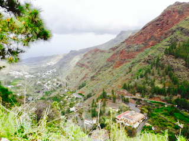
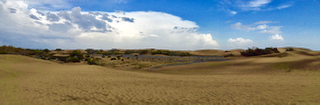
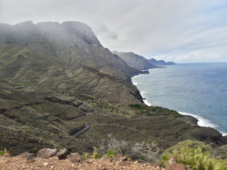
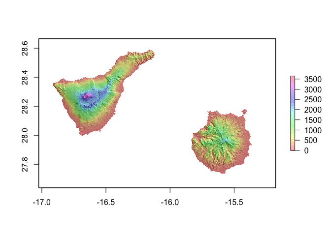
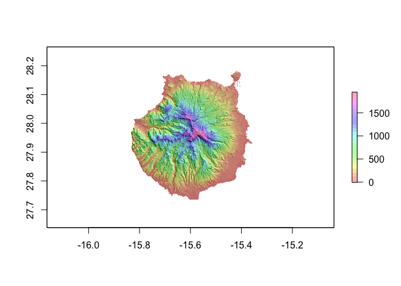
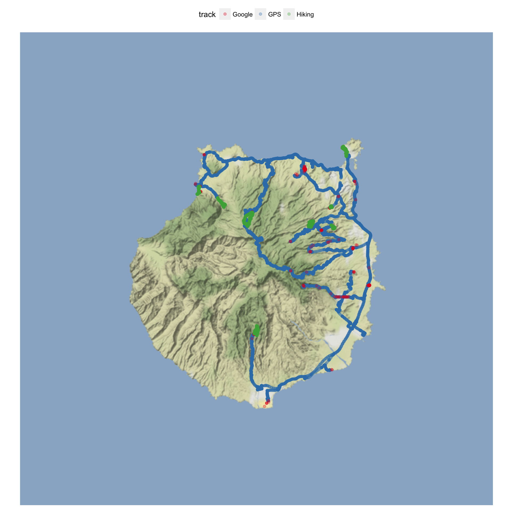

Recently, I was on Gran Canaria for a vacation. So, what better way to keep up the holiday spirit a while longer than to visualize all the places we went in R!?
I am combining location data collected by
- our car GPS,
- Google location data from my phone and
- the hiking tracks we followed.
Obviously, the data itself is not public this time but the principles for plotting can be used with any .gpx files that cointain latitude, longitude and elevation data.
Gran Canaria
Gran Canaria is one of the Spanish Canary Islands off the coast of Morocco. As its sister islands, it is of volcanic origin.
  
Car GPS tracks
The GPS tracks in .gpx format were downloaded from the device (Garmin) the same way as I had already done with the tracks from our US/Canada roadtrip last year. Garmin’s .gpx tracks are not in a standard format that could be read with readGPX(), so I had to use htmlTreeParse() from the XML library.
library(XML)
# list of files in directory
myfiles <- list.files(path = "Takeout_2017_March", full.names = TRUE)
# all gpx files in that directory
myfiles <- myfiles[grep(".gpx", myfiles)]
for (i in 1:length(myfiles)) {
# parse document
pfile <- htmlTreeParse(myfiles[i], useInternalNodes = T)
# Get all elevations, times and coordinates via the respective xpath
elevations <- as.numeric(as.character(xpathSApply(pfile, path = "//trkpt/ele", xmlValue)))
times <- xpathSApply(pfile, path = "//trkpt/time", xmlValue)
coords <- xpathSApply(pfile, path = "//trkpt", xmlAttrs)
# Extract latitude and longitude from the coordinates
lats <- as.numeric(as.character(coords["lat",]))
lons <- as.numeric(as.character(coords["lon",]))
# Put everything in a dataframe
geodf <- data.frame(lat = lats, lon = lons, ele = elevations, time = times)
if (i == 1) {
geodata <- geodf
} else {
geodata <- rbind(geodata, geodf)
}
}
geodata_all <- geodata
# Transforming the time column
geodata_all$time <- as.character(strptime(geodata_all$time, format = "%Y-%m-%dT%H:%M:%SZ"))
# ordering by date
library(dplyr)
geodata_all <- arrange(geodata_all, time)
# keep only data points from Gran Canaria
geodata_gc <- filter(geodata_all, lat < 28.5 & lat > 27.5) %>%
filter(lon > -16 & lon < -15)
Hiking tracks
The hiking tracks we followed came mostly from a German hiking guide-book, the Rother Wanderführer, 7th edition from 2016. They were in standard .gpx format and could be read with readGPX().
Only one of our hikes did not come from this book, but from Wikiloc. It could be treated the same way as the other hiking tracks, though, so I combined all hiking tracks.
library(plotKML)
# get file names
myfiles <- list.files(path = "hiking", full.names = TRUE)
myfiles <- myfiles[grep(".gpx", myfiles)]
for (i in 1:length(myfiles)) {
# read in gpx files
t <- readGPX(myfiles[i])
# extract latitude, longitude and elevation
geodf <- data.frame(lon = t$tracks[[1]][[1]]$lon,
lat = t$tracks[[1]][[1]]$lat,
ele = t$tracks[[1]][[1]]$ele,
tour = names(t$tracks[[1]]))
# combine into data frame
if (i == 1) {
geodata <- geodf
} else {
geodata <- rbind(geodata, geodf)
}
rm(pfile)
}
geodata_tracks <- geodata
Google location history
The Google location data from my phone were prepared the same way as in my post about plotting your Google location history.
library(jsonlite)
system.time(x <- fromJSON("Standortverlauf.json"))
# extracting the locations dataframe
loc = x$locations
# converting time column from posix milliseconds into a readable time scale
loc$time = as.POSIXct(as.numeric(x$locations$timestampMs)/1000, origin = "1970-01-01")
# converting longitude and latitude from E7 to GPS coordinates
loc$lat = loc$latitudeE7 / 1e7
loc$lon = loc$longitudeE7 / 1e7
# keep only data from Gran Canaria
loc_gc <- filter(loc, lat < 28.5 & lat > 27.5) %>%
filter(lon > -16 & lon < -15)
All three datasets had information about the latitude/longitude coordinate pairs and of the elevation of each observation, so I can combine these three attributes from the three location data sources.
geodata_tracks$ele <- as.numeric(as.character(geodata_tracks$ele))
data_combined <- data.frame(lat = c(geodata_gc$lat, loc_gc$lat, geodata_tracks$lat),
lon = c(geodata_gc$lon, loc_gc$lon, geodata_tracks$lon),
ele = c(geodata_gc$ele, loc_gc$altitude, geodata_tracks$ele),
track = c(rep("GPS", nrow(geodata_gc)), rep("Google", nrow(loc_gc)), rep("Hiking", nrow(geodata_tracks))))
data_combined <- data_combined[!duplicated(data_combined), ]
Elevation profile
I downloaded the elevation profile of Gran Canaria with the maptools and raster packages.
library(maptools)
library(raster)
srtm <- getData("SRTM", lon = -15.59972, lat = 27.965)
# crop to Gran Canaria & Tenerife
e1 <- extent(min(data_combined$lon) - 1.2, # xmin
max(data_combined$lon) + 0.1, # xmax
min(data_combined$lat) - 0.1, # ymin
max(data_combined$lat) + 0.5) # ymax
srtm_ct <- crop(srtm, e1)
# plot slope and aspect with hill shades
slope <- terrain(srtm_ct, opt = "slope")
aspect <- terrain(srtm_ct, opt = "aspect")
hill <- hillShade(slope, aspect, angle = 45, direction = 45, normalize = TRUE)
plot(hill, col = grey(0:100/100), legend = FALSE)
plot(srtm_ct, col = rainbow(25, alpha = 0.35), add = TRUE)

Its sister island to the west, Tenerife is a bit larger and, as can be seen in the image above, its highest point, the Teide, is about 1000 meters higher than Gran Canaria’s highest point.
# crop to Gran Canaria
e2 <- extent(min(data_combined$lon) - 0.2, # xmin
max(data_combined$lon) + 0.1, # xmax
min(data_combined$lat) - 0.1, # ymin
max(data_combined$lat) + 0.1) # ymax
srtm_c <- crop(srtm, e2)
slope <- terrain(srtm_c, opt = "slope")
aspect <- terrain(srtm_c, opt = "aspect")
hill <- hillShade(slope, aspect, angle = 45, direction = 45, normalize = TRUE)
plot(hill, col = grey(0:100/100), legend = FALSE)
plot(srtm_c, col = rainbow(25, alpha = 0.35), add = TRUE)

Looking only at Gran Canaria’s slope and aspect profile, the plots nicely show its highest point (almost 2000 m) in the center of the island and that it slopes down towards sea level at the coast.
ggmap
I centered the map at the midpoint of Gran Canaria, which is given by http://www.travelmath.com/island/Gran+Canaria as 27° 57’ 54” N / 15° 35’ 59” W. Converted to decimal with http://www.rapidtables.com/convert/number/degrees-minutes-seconds-to-degrees.htm that is 27.965 & 15.59972.
library(ggplot2)
library(ggmap)
map_theme <- list(theme(legend.position = "top",
panel.grid.minor = element_blank(),
panel.grid.major = element_blank(),
panel.background = element_blank(),
plot.background = element_rect(fill = "white"),
panel.border = element_blank(),
axis.line = element_blank(),
axis.text.x = element_blank(),
axis.text.y = element_blank(),
axis.ticks = element_blank(),
axis.title.x = element_blank(),
axis.title.y = element_blank(),
plot.title = element_text(size = 18)))
map <- get_map(c(lon = -15.59972, lat = 27.965), zoom = 10, maptype = "terrain-background", source = "google")
ggmap(map) +
geom_point(data = data_combined, aes(x = lon, y = lat, color = track), alpha = 0.3) +
scale_color_brewer(palette = "Set1") +
map_theme

The above plot shows the different location data sources. Our car GPS recorded the most data points along our routes (blue), while Google location data (red) is only recorded occasionally (usually, when I turn on my phone, so it primarily shows places we walked around in). The hiking tracks in green show the 7 hikes we’ve followed.
map <- get_map(c(lon = -15.59972, lat = 27.965), zoom = 10)
ggmap(map) +
geom_point(data = na.omit(data_combined), aes(x = lon, y = lat, color = ele)) +
scale_color_gradient2(low = "lightblue", mid = "blue", high = "red", name = "Elevation") +
map_theme

This plots shows the elevation of the location points we’ve been.
3D plots
Because the 2D plot doesn’t show the elevation very clearly, I wanted to plot this in 3D.
library(scatterplot3d)
# http://gis.stackexchange.com/questions/142156/r-how-to-get-latitudes-and-longitudes-from-a-rasterlayer
r.pts <- rasterToPoints(srtm_c, spatial = TRUE)
geo.prj <- proj4string(r.pts)
r.pts <- spTransform(r.pts, CRS(geo.prj))
bg_matrix <- data.frame(lon = coordinates(r.pts)[,1],
lat = coordinates(r.pts)[,2])
ex_bg <- extract(srtm_c, bg_matrix, cellnumbers = TRUE, df = TRUE)
bg_matrix$ele <- ex_bg$srtm_33_07
ex_points <- extract(srtm_c, cbind(data_combined$lon, data_combined$lat), cellnumbers = TRUE, df = TRUE)
s3d <- scatterplot3d(x = bg_matrix[, 1],
y = bg_matrix[, 2],
z = bg_matrix[, 3],
type = "p",
pch = 16,
highlight.3d = TRUE,
cex.symbols = 0.5,
box = FALSE,
grid = FALSE,
xlab = "Longitude",
ylab = "Latitude",
zlab = "Elevation")
s3d$points3d(x = data_combined$lon, y = data_combined$lat, z = ex_points$srtm_33_07, col = "blue", pch = 16, cex = 0.1)

The first 3D plot shows a scatterplot of our location points on the elevation profile of Gran Canaria. It was created with scatterplot3d.
But I also wanted to be able to see the 3D plot from different angles, soI used rgl to make interactive 3D plots.
library(rgdal)
library(rasterVis)
library(rgl)
library(htmlwidgets)
options(rgl.printRglwidget = TRUE)
open3d()
plot3D(srtm_c, maxpixels = 7e4)
Click to open the interactive 3D image and use the mouse to zoom and turn the plot:
This interactive 3D plot shows the elevation profile of the whole island and you can clearly see the various ravines that have been shaped over the years.
Now, I would have liked to plot our location points directly onto this plot, but I couldn’t figure out how to do this (if someone knows, please let me know). Instead, I plotted only our location points in 3D.
options(rgl.printRglwidget = TRUE)
open3d()
plot3d(data_combined$lon, data_combined$lat, ex_points$srtm_33_07,
xlab = "", ylab = "", zlab = "",
col = "blue", size = 5, alpha = 0.1,
lit = TRUE,
box = FALSE, axes = FALSE)
Click to open the interactive 3D image and use the mouse to zoom and turn the plot:

Here as well, I would have liked to have the elevation profile of the island behind it, but the code that worked well within RStudio (see below) did not plot the background points in my html output. I assume that it has to do with having too many points, so if somebody knows a way to reduce the resolution, please let me know!
plot3d(bg_matrix$lon, bg_matrix$lat, bg_matrix$ele,
xlab = "", ylab = "", zlab = "",
col = "grey", size = 5, alpha = 0.1,
box = FALSE, axes = FALSE, useNULL = TRUE)
plot3d(data_combined$lon, data_combined$lat, ex_points$srtm_33_07,
col = "blue", add = TRUE, size = 10, alpha = 0.5, useNULL = TRUE)
sessionInfo()
## R version 3.3.3 (2017-03-06)
## Platform: x86_64-apple-darwin13.4.0 (64-bit)
## Running under: macOS Sierra 10.12.3
##
## locale:
## [1] en_US.UTF-8/en_US.UTF-8/en_US.UTF-8/C/en_US.UTF-8/en_US.UTF-8
##
## attached base packages:
## [1] stats graphics grDevices utils datasets methods base
##
## other attached packages:
## [1] scatterplot3d_0.3-38 htmlwidgets_0.8 rgl_0.98.1
## [4] rasterVis_0.41 latticeExtra_0.6-28 RColorBrewer_1.1-2
## [7] lattice_0.20-34 rgdal_1.2-5 raster_2.5-8
## [10] maptools_0.9-2 sp_1.2-4
##
## loaded via a namespace (and not attached):
## [1] Rcpp_0.12.9 knitr_1.15.1 magrittr_1.5
## [4] xtable_1.8-2 viridisLite_0.2.0 R6_2.2.0
## [7] stringr_1.2.0 tools_3.3.3 parallel_3.3.3
## [10] grid_3.3.3 htmltools_0.3.5 yaml_2.1.14
## [13] rprojroot_1.2 digest_0.6.12 shiny_1.0.0
## [16] mime_0.5 evaluate_0.10 rmarkdown_1.3
## [19] stringi_1.1.2 backports_1.0.5 jsonlite_1.2
## [22] httpuv_1.3.3 foreign_0.8-67 hexbin_1.27.1
## [25] zoo_1.7-14